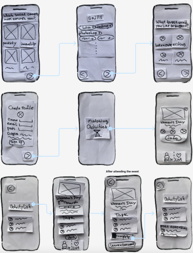
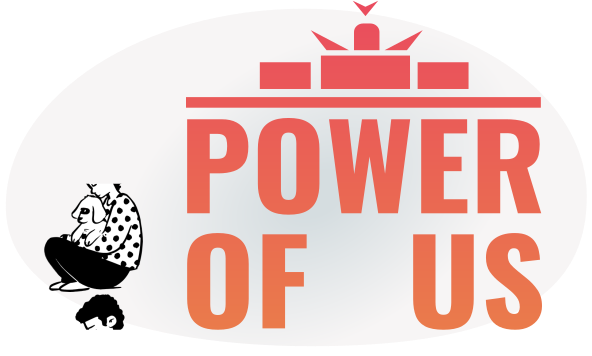

Power of us
How we can create social impact, to make this world a better place, together.

UX/UI Designer
App
Fig Jam, Figma
4 Designers
2 weeks
Introduction
When I was a child, I was firmly convinced that by 2020 it would be easy to buy a tourist ticket to Mars. But it didn’t happen.
We, as humanity, got stuck in a bunch of problems separating us from a bright future, such as war, poverty, inequality, this list you may continue by yourself.
We, as humanity, got stuck in a bunch of problems separating us from a bright future, such as war, poverty, inequality, this list you may continue by yourself.
Research and problem statement:
The people we surveyed were truly diverse; they had different lifestyles, priorities, and skills, but they were united by one thing: all of them were worried about the social issue. During user interviews, we also learned that most people feel disappointment and a sense of powerlessness due to the lack of ability to influence the situation. This sometimes leads to feelings of guilt, which may be familiar to my reader as well.
At the same time, there are initiatives and organizations on the other side that need support but lack mass expression and simply `free hands`.
We formulated the problem statement as: "An interested, but inactive person, needs a way to confidently join social initiatives, because they want to contribute, but feel like they don’t have an impact".
So here’s the thing. The biggest path always consists of small steps. And we’ve designed a product that allows everyone who wishes to take these steps in the most comfortable way possible to avoid frustrating patterns. A concept that will connect the need with the resource. Making this world better. To connect the skills and free time with a project/initiative/organization in need of this type of support.
At the same time, there are initiatives and organizations on the other side that need support but lack mass expression and simply `free hands`.
We formulated the problem statement as: "An interested, but inactive person, needs a way to confidently join social initiatives, because they want to contribute, but feel like they don’t have an impact".
So here’s the thing. The biggest path always consists of small steps. And we’ve designed a product that allows everyone who wishes to take these steps in the most comfortable way possible to avoid frustrating patterns. A concept that will connect the need with the resource. Making this world better. To connect the skills and free time with a project/initiative/organization in need of this type of support.
Solution:
Specifically: the user can choose the most interesting areas of problem, then choose from the proposed list the type of desired activity and the resources and skills available. Location. And based on these parameters, in a gamified form, they will be offered to choose an activity for themselves at a preferred time. By swiping through the cards, we get information including about projects in which we may not participate, which nevertheless greatly affects our awareness of processes and activities in the selected directions in our location.
During the card review process, we can also go back to the ones we initially rejected and add events of interest to our selected list before making a final decision on participation and committing.
Additionally, there is also an option to view information with records on past events and activities of other groups and users, which may inspire us to participate in them next time and also visually see the result of influence and actions.
During the card review process, we can also go back to the ones we initially rejected and add events of interest to our selected list before making a final decision on participation and committing.
Additionally, there is also an option to view information with records on past events and activities of other groups and users, which may inspire us to participate in them next time and also visually see the result of influence and actions.
Wire-framing:
Specifically: the user can choose the most interesting areas of problem, then choose from the proposed list the type of desired activity and the resources and skills available. Location. And based on these parameters, in a gamified form, they will be offered to choose an activity for themselves at a preferred time. By swiping through the cards, we get information including about projects in which we may not participate, which nevertheless greatly affects our awareness of processes and activities in the selected directions in our location.
During the card review process, we can also go back to the ones we initially rejected and add events of interest to our selected list before making a final decision on participation and committing.
Additionally, there is also an option to view information with records on past events and activities of other groups and users, which may inspire us to participate in them next time and also visually see the result of influence and actions.
During the card review process, we can also go back to the ones we initially rejected and add events of interest to our selected list before making a final decision on participation and committing.
Additionally, there is also an option to view information with records on past events and activities of other groups and users, which may inspire us to participate in them next time and also visually see the result of influence and actions.

Design System:
Specifically: the user can choose the most interesting areas of problem, then choose from the proposed list the type of desired activity and the resources and skills available. Location. And based on these parameters, in a gamified form, they will be offered to choose an activity for themselves at a preferred time. By swiping through the cards, we get information including about projects in which we may not participate, which nevertheless greatly affects our awareness of processes and activities in the selected directions in our location.
During the card review process, we can also go back to the ones we initially rejected and add events of interest to our selected list before making a final decision on participation and committing.
Additionally, there is also an option to view information with records on past events and activities of other groups and users, which may inspire us to participate in them next time and also visually see the result of influence and actions.
During the card review process, we can also go back to the ones we initially rejected and add events of interest to our selected list before making a final decision on participation and committing.
Additionally, there is also an option to view information with records on past events and activities of other groups and users, which may inspire us to participate in them next time and also visually see the result of influence and actions.

Next steps:

or check out other
my projects:
Gallery&Workshop
"SCHMUCK-Fritz"
(website)
(website)
Challenge manager
"Better ME"
(application)
(application)
(c) Oxana Pravdina 2024